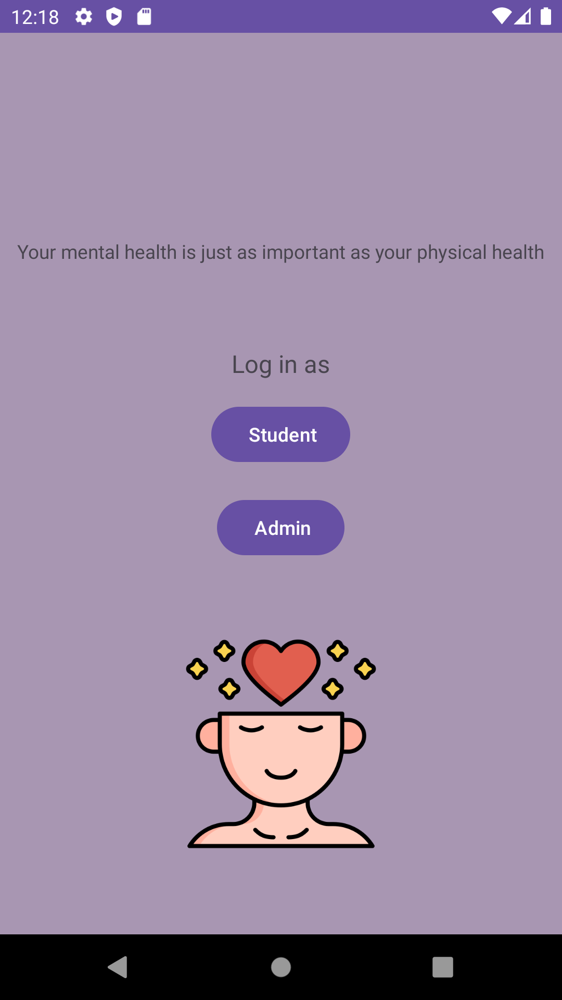
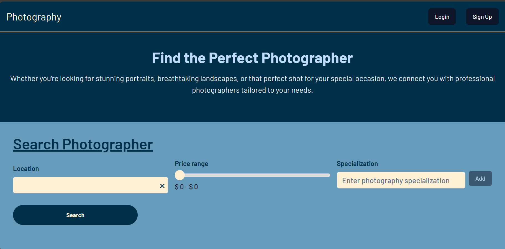
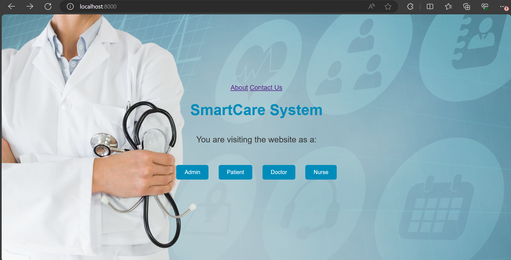

Software Development Projects
SafePlace - Mobile App
Safe Place is a mobile app aimed to provide a platform for students to easily find and book appointments with therapists, counselors, and psychologists. Additionally, the app includes features for administrators to manage counselors' details, availability times, and bookings, as well as communication tools for students and counselors.
Features
Student Interface:
- View counselor profiles, including their specialization and availability times.
- Book appointments with counselors.
- Communicate with counselors through in-app messaging.
- Access managing tools for appointments.
Administrator Interface:
- Add, edit, or remove counselor profiles.
- Manage counselor availability times.
- View and manage student appointments.
- Monitor communication between students and counselors.
Technologies Used:
- Kotlin
- Android SDK
- Firebase (for authentication, database, and messaging)
Photographers Booking System - Web App
This web application aims to connect professional photographers with potential clients. It serves the photographers by allowing them to create an account and customize their portfolio by adding their work, their speciality, price range, and brief description about them.
Client Features:
- Create an account and search for photographers using the search engine provided.
- Filter the search results.
- View photographers' portfolios and book a service.
- Communicate with photographers on the website.
- Manage bookings and accounts.
- Leave reviews/ratings for photographers' services, which will be shown on the photographers' portfolios.
System Features:
- Provide notifications for actions done by both types of users via in-website notifications and SMS notifications.
Technologies Used:
- MERN stack
- MongoDB for the database
- React for the front end
- Express.js and Node.js for the backend
Smart Care App - Web App
The Smart Care App is a web-based system that aims to replace the paper-based system of SmartCare Surgery, a GP business, with a web-based system accessible to doctors, nurses, and patients. The system facilitates appointment booking, consultation management, invoicing, and administrative tasks.
System Features:
- Include main pages for selecting user type and actions, login/registration, dashboards for doctors, nurses, patients, and admins.
- Smooth navigation between pages and secure access to user dashboards.
- Integration with external services for calendar and address lookup.
- Separate deployment of the database system using Docker containers.
Technologies Used:
- Python Django
- Database system (PostgreSQL in our case)
- Docker
- Django Restful Framework (DRF)